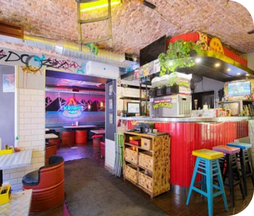

Друзья
Друзья
Ситком
Кафе
Кухня моники в центре
5,0 🌟
«Друзья» — американский ситком, повествующий о жизни шестерых друзей.
Признан одним из лучших комедийных сериалов в истории американского телевидения и стал одним из наиболее знаменитых проектов 1990-х годов.
СПб, Большой проспект ПС 81 (м.Петроградская)

Гарри поттер
Гарри Поттер
Мистика
Лавка-кафе сувениров
Лавка «Косой Переулок»
4,8 🌟
Вкуснейшее сливочное пиво по уникальному рецепту, авторский кофе, тематические блинчики и десерты. Попробуй Письмо из Хогвартса на вкус!
СПБ, Большая Пушкарская ул., 38

Черепашки Ниндзя
Черепашки Ниндзя
Мультик
Кафе
Пиццерия «Krang Pizza»
5,0 🌟
Внутреннее убранство оформлено в неоновом «ретро-вейв» стиле, погружая в атмосферу романтизированных 90х, а на стенах красуются персонажи из «Черепашек»
СПБ, Гороховая улица, д. 28
